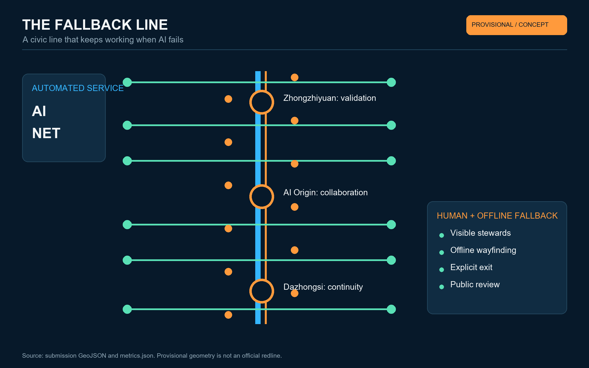
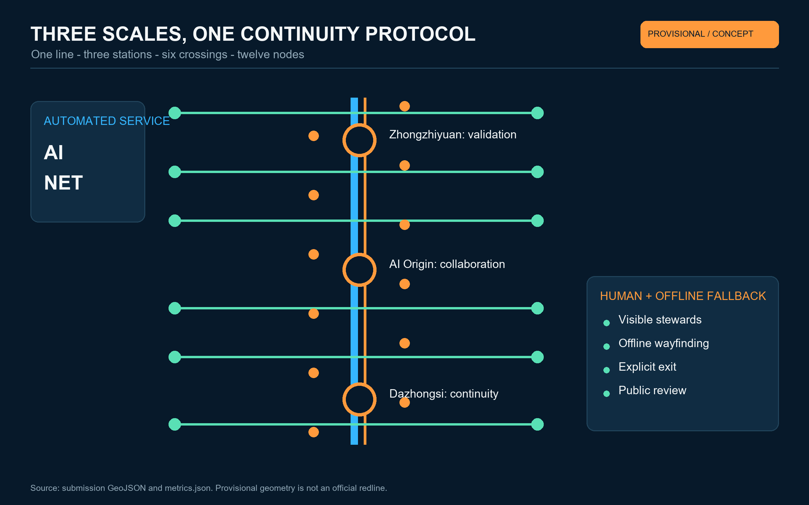
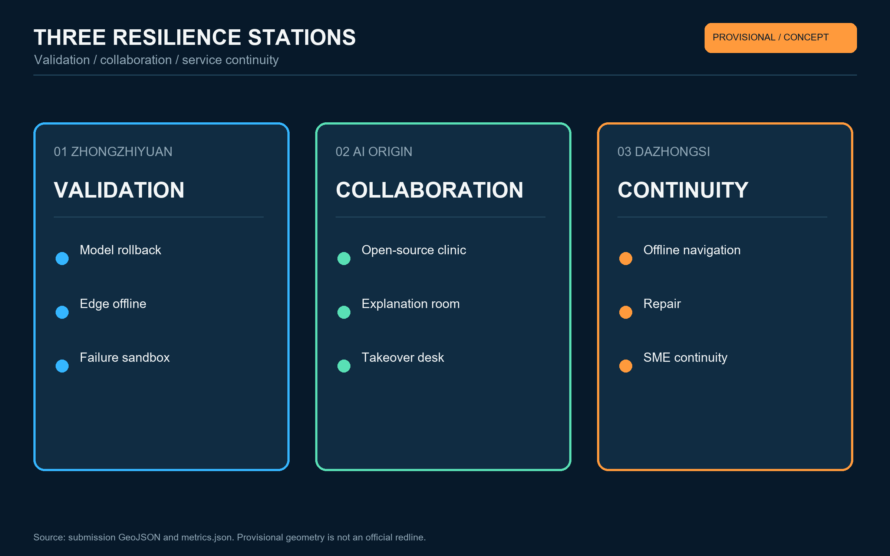
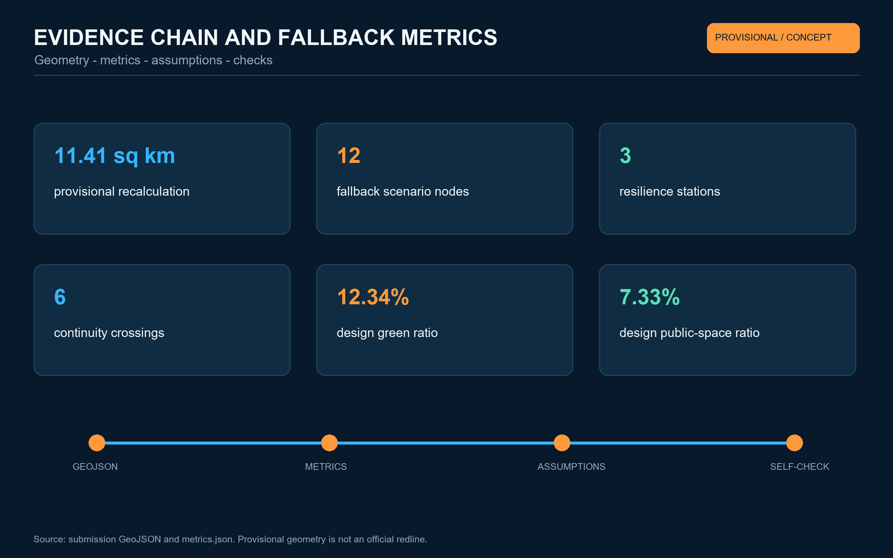

Overview map

A civic line that keeps working when AI fails
Cross-referenced to metrics.json, GeoJSON and self_check.json.




PASS - spatial topology / visual package / professional evidence
Announcement 1.3-1.5 and agent.1-agent.6 are mapped in the matrices.
All spatial moves are conceptual references. Provisional geometry is not an official redline and must be fully recomputed.
Authority records: sources.json. Data gaps: assumptions.json.